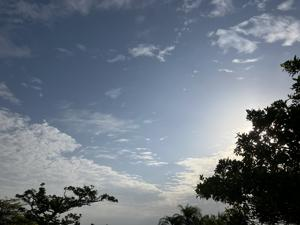
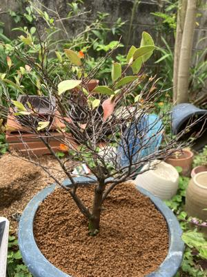
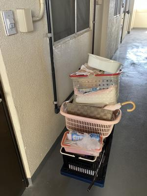
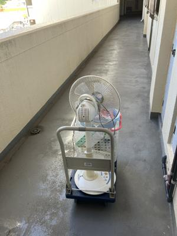

うるがいの話 ある日
最新: ギーマの木の危機【うるがいの話 ある日】とは 一日だけのプログです
『うるがいの話』の最新一日だけのプログで、通信料が少なく経済的だ。カニの画像をクリックすると全ての日付が載る『うるがいの話』サイトを表示します
|
|
【うるがいの話】 うるがい(ｳﾙｶﾞｲ urugai)とは、『もずくがに』の名前でとても大きくなります。 |
|---|---|
|
|
【カミマヤーの話】 猫のことを方言でマヤーといいます。カミマヤー（kamimayaa）とは、神の猫のことです。 |
|
【たながぁの音楽】 たながぁ（ﾀﾅｶﾞｰ tanagaa）とは手長えびのことで、何種類かあり大きいのは車 エビぐらいになります。 |

|
【ぶながぁの話】 ぶながぁ(ﾌﾞﾅｶﾞｰ bunagaa)とは、赤い髪の毛、赤い身体、そして身長は１ｍ２０ｃｍ ぐらい、川の蟹を食べているの目撃された。場所は沖縄県国頭郡大宜味村のと ある村僕の隣近所に住んでいる爺さんから、聞いた話です。 |
|
|
【ギーマの話】 ギーマ(giima)とは、山原の里山に咲くスズランに似た、 花を付けます。実は食べられます、 気が付くと口の周りが紫になっています。 |
2025年05月04日 (日）ギーマの木の危機
15:43

いつもは新芽が出るはずだがと、気にはしていたが。きのう、葉が
沢山枯れそうになっていた。ヤバイぜと、夕方に土を入れ替えたが
・・・、もうダメかも。
下は、土を入れ替えたやばそうな状態のギーマの木

下は、３年前２０２２年０５月０２日（月）植え替え土を入れ替え
た後のギーマの木

マンションの対応で、気配りがかけていた。ふと、バタフライピー
をみると、わずかに残っていた緑の葉が、全て枯れている。大丈夫
なのでしょうか、心配である。肥しも買ってきたのに・・・・・。
５月３日（土曜日） １５時２５分 台車活躍

扇風機などを運びだす
